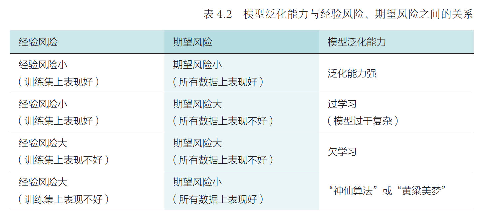
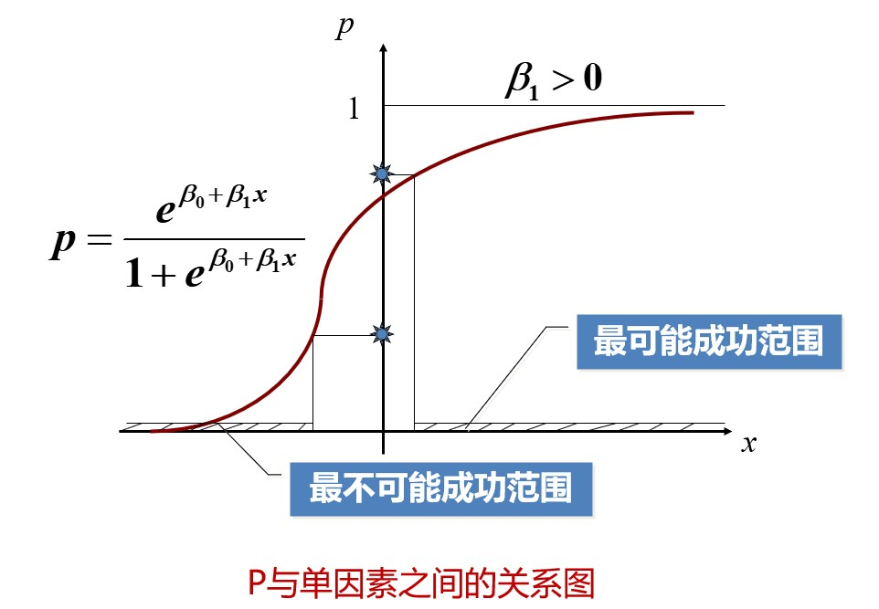
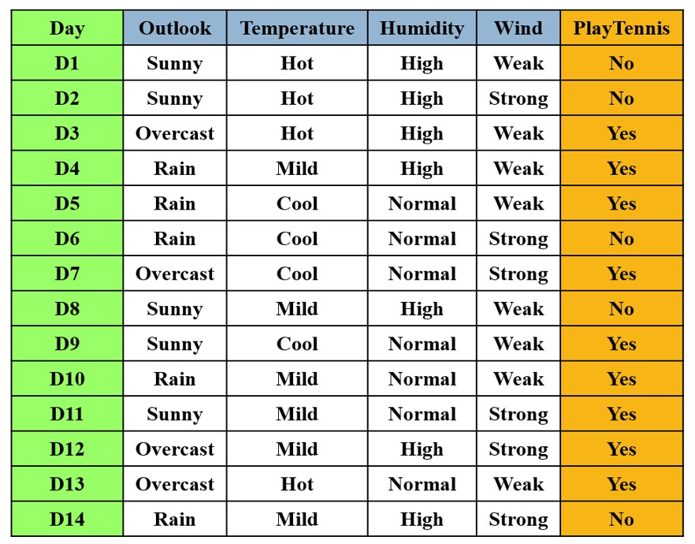
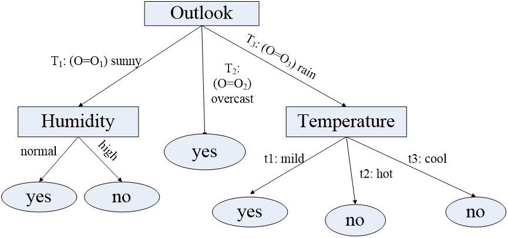

Chapter3 机器学习
机器学习的分类：
- 监督学习： 数据有标签，一般为回归或分类等任务
- 无监督学习： 数据无标签，一般为聚类或降维等任务
- 强化学习： 序列数据决策学习，一般从环境交互中学习
3.1 监督学习
监督学习的基本概念
训练集中一共有$n$个标注数据，第$i$个标注数据记为$(x_i,y_i)$，其中第$i$个样本数据为$x_i$，$y_i$是$x_i$的标注信息。
我们的目标是建立一个映射函数$f:x\mapsto y$，使得$f(x_i)$尽量等于$y_i$。
损失函数：
对于$x_i$，损失函数用于计算真实值$y_i$与预测值$f(x_i)$之间的差距，我们的目标是使得损失函数总和尽可能小。

训练数据/测试数据/未知数据：
用训练数据集学习映射函数$f$
用测试数据集测试映射函数$f$
用未知数据集使用映射函数$f$
经验风险/期望风险：
| 经验风险 | 期望风险 |
|---|---|
| $\frac{1}{n}\sum\limits_{i=1}^nLoss(y_i,f(x_i))$ | $\int_{x\times y}Loss(y,f(x))P(x,y)dxdy$ |
| 训练集中数据（有限）产生的平均损失 | 测试集中数据（无限）产生的联合分布期望损失 |
| 经验风险越小，说明学习模型对训练数据拟合程度越好 | 期望风险越小，说明学习模型越好 |
当训练数据数$n\rightarrow\infty$时，经验风险趋于期望风险。
过学习/欠学习：

结构风险最小化：
为了防止过学习，结构风险最小化在经验风险的基础上引入正则项或惩罚项来降低模型复杂度，既最小化经验风险，又力求降低模型复杂度，在二者间寻找平衡：
$$\frac{1}{n}\sum\limits_{i=1}^nLoss(y_i,f(x_i))+\lambda J(f)$$
其中，$J(f)$是正则化因子或惩罚项因子，$\lambda$是调整惩罚强度的系数。
模型性能度量方法：
以二分类问题为例，$n$为训练样例总数，正例总数为$P$，反例总数为$N$，真正例、假正例、真反例、假反例的数量分别为$TP$、$FP$、$TN$、$FN$。
- 准确率：$ACC=\frac{TP+TN}{P+N}$： 若正负样本比例不均衡，则不是一个度量模型的好方法
- 错误率：$errorRate=\frac{FP+FN}{P+N}$： 1-准确率
- 精确率：$precision=\frac{TP}{TP+FP}$： 表示被模型预测为正例的样本中实际为正例的比例
- 召回率：$recall=\frac{TP}{TP+FN}$： 表示所有正例样本中被模型预测为正例的比例
- 综合分类率：$F1score=\frac{2}{\frac{1}{precision}+\frac{1}{recall}}$： 精确率和召回率的调和平均，在尽可能提高二者的同时减小差异
判别模型：
学习目标：映射函数$f$或者条件概率分布$P(Y|X)$
生成模型：
学习目标：联合概率分布$P(X,Y)$（通过似然概率$P(X|Y)$和类概率$P(Y)$的乘积来求取）
回归分析
分析不同变量之间存在关系的研究叫回归分析，刻画不同变量之间关系的模型被称为回归模型。
单变量线性回归：
符号表示：
- $m$：训练集样本数
- $x$：输入变量/特征
- $y$：输出变量/目标
- $(x_i,y_i)$：第$i$个训练样本
- $h$：解决方案/函数/假设
单变量线性回归分析即拟合一条直线：
$$h_\theta(x)=\theta_0+\theta_1(x)$$
使用误差平方和函数：
$$J(\theta_0,\theta_1)=\frac{1}{m}\sum\limits_{i=1}^m(h_\theta(x_i)-y_i)^2$$
作为回归问题的代价函数，来衡量预测值与真实值的接近程度。
我们的目标是选择合适的$\theta_0$和$\theta_1$，使得$J(\theta_0,\theta_1)$最小化。

梯度下降算法：
梯度下降算法是最常见的一种函数最小化算法。
优化思路：
- 设置一组初始的参数（比如说设置$\theta_0=\theta_1=0$），作为优化的起点
- 不断改变$\theta_0$，$\theta_1$，使$J(\theta_0,\theta_1)$减小，直到到达最小值，这里的实现思路是选择该点处下降最快（最陡峭）的方向：
$$\theta_0'=\theta_0-\alpha\frac{\partial}{\partial\theta_0}J(\theta_0,\theta_1)$$
$$\theta_1'=\theta_1-\alpha\frac{\partial}{\partial\theta_1}J(\theta_0,\theta_1)$$
$$\theta_0=\theta_0'$$
$$\theta_1=\theta_1'$$
Note
多个参数的更新应当同步进行。
$\alpha$为控制迈步大小的正参数（学习率），偏导数为迈步的大小和方向。
即便学习率保持不变，梯度下降仍然能够收敛到局部最优（偏导数逐渐减小直到0）。
对于线性回归模型，只有一个全局最优点，因此不用担心陷入“局部”最优的问题，其局部最优即为全局最优。
| 批量梯度下降 | 随机梯度下降 | 小批量梯度下降 |
|---|---|---|
| 在梯度下降的每一步都使用训练集的全部样本 | 每次只使用一个样本 | 每次使用一部分样本 |
| 最精确，但样本数较大时速度慢 | 速度最快，但相对不精确 | 折中，在实际运用中最为常见 |
最小二乘法：
实际上即为针对于单变量线性回归的梯度下降算法，可简化为：求解方程组
$$\begin{cases} \frac{\partial J(\theta_0,\theta_1)}{\partial\theta_0}=0\\ \frac{\partial J(\theta_0,\theta_1)}{\partial\theta_1}=0 \end{cases}$$
逻辑回归：
若要研究某一事件发生的概率与若干因素之间的关系，这种情况下不适合用线性回归模型，因为其对离群点非常敏感，导致模型建模不稳定，结果有偏。应当使用逻辑回归模型：
$$\ln\frac{p}{1-p}=\beta_0+\beta_1x_1+···+\beta_qx_q\Rightarrow p=\frac{1}{1+e^{-(\beta_0+\beta_1x_1+···+\beta_qx_q)}}$$
优势比：$OR=\frac{p}{1-p}$
函数性质：单调递增，值域为$(0,1)$，当输入$x=[x_1,···,x_q]$趋于一定数值后，输出$p$无限逼近1或0，当$z=\beta_0+\beta^Tx=0$时，输出$p$为0.5。

Note
单纯的逻辑回归模型只能解决二分类问题。
决策树
决策树是一种通过树形结构进行分类的监督学习方法，每个非叶子节点表示对分类目标在某个属性上的一个判断，每个叶子节点表示一种分类结果，因此决策树可以看作一系列以叶子节点为输出的决策规则。
建立决策树的过程，就是不断选择属性值对样本集进行划分，直至每个子样本集为同一类别的过程。要解决的问题有：
- 收集属性完全且分类好的数据
- 确定用于分类的属性
- 选择最佳的分类原则
-
设计分类停止条件
- 节点包含的数据太少不足以分裂
- 继续分裂数据集对树生成的目标(例如ID3中的熵下降准则)没有贡献
- 树的深度过大不宜再分
通用的决策树分裂目标是使整棵树的熵总量最小。
信息熵：
信息熵是一种衡量集合纯度的指标。信息熵越大，说明属性分配越平均，集合的不确定度大，纯度低，不具有鉴别度；信息熵越小，说明属性分配越一致，集合的不确定度小，纯度高，具有鉴别度。
给定一个集合$S$，其中的样本最终被分类为$y_1,y_2,···,y_n$，比例依次为$p_1,p_2,···,p_n$，则$S$的信息熵为
$$E(S)=-\sum\limits_{i=1}^np_i\log_2p_i$$
信息增益：
信息增益是衡量集合纯度增大程度（集合不确定性减少程度）的指标，作为决策树分支属性选择的依据。
给定一个集合$S$，其依据属性$A$分类得到集合$S_1,S_2,···,S_m$，则$S$中属性$A$的信息增益为
$$G(S,A)=E(S)-E(A)=E(S)-\sum\limits_{i=1}^{m}\frac{|S_i|}{|S|}E(S_i)$$
ID3算法流程：
- 计算当前的信息熵
- 考察任一属性，分成若干子集
- 每个子集计算信息熵，然后计算得到每个属性的信息增益
- 从所有属性中选择信息增益最大的属性作为当前决策
Example

根据天气的四个属性，使用ID3算法，构建决策树。
记“适合打网球”为“正例”，“不适合打网球”为“反例”
初始状态下，14个实例中有9个正例5个反例
$E(Initial)=-(\frac{9}{14}\log_2\frac{9}{14}+\frac{5}{14}\log_2\frac{5}{14})=0.940$
若选择Outlook为下一步的分类属性，则分成Sunny（2正3负），Overcast（4正0负），Rain（3正2负）
$E(A)=-\frac{5}{14}(\frac{2}{5}\log_2\frac{2}{5}+\frac{3}{5}\log_2\frac{3}{5})-\frac{4}{15}(\frac{4}{4}\log_2\frac{4}{4}+\frac{0}{4}\log_2\frac{0}{4})-\frac{5}{15}(\frac{3}{5}\log_2\frac{3}{5}+\frac{2}{5}\log_2\frac{2}{5})=0.694$
因此，这种划分的信息增益是
$G(Initial,Outlook)=0.940-0.694=0.246$
同理
$G(Initial,Temperature)=0.029$
$G(Initial,Humidity)=0.151$
$G(Initial,Wind)=0.048$
Outlook属性的增益值最大，因此以其作为分类依据，分得三个子集，生成三个子节点
对每个子节点递归采用上述过程，直至每个节点都成为叶子节点

存在问题：
若把“编号”也作为一个候选划分属性，则其信息增益一般远大于其他属性，这时容易导致模型过拟合，即信息增益对可取值数目较多的属性有所偏好。
增益率：
增益率的核心思想是对分支过多进行惩罚，除了计算属性划分后的信息增益以外，还要计算划分行为本身带来的信息。
$$GainRatio(S,A)=\frac{Gain(S,A)}{-\sum\limits_{i=1}^m\frac{|S_i|}{S}\log_2\frac{|S_i|}{S}}$$
相比于直接根据信息增益选择分类属性，更好的方式是先在候选属性中找出信息增益高于平均水平的属性，再从中选取增益率最高的。
剪枝处理：
-
预剪枝： 对每个节点在划分前进行评估，若当前节点的划分不能带来决策树泛化性能提升，则停止划分并将当前节点记为叶节点，其类别标记为训练样例数最多的类别
-
优点：降低过拟合风险，减小时间开销
-
缺点：有欠拟合风险
-
后剪枝： 先从训练集生成一棵完整的决策树，然后自底向上地对非叶节点进行考察，若将该节点对应的子树替换为叶节点能带来决策树泛化性能提升，则将该子树替换为叶节点
-
优点：欠拟合风险小
- 缺点：时间开销大
线性判别分析（LDA）
LDA是一种基于监督学习的降维方法，对于一组具有标签信息的高维数据样本，LDA利用其类别信息，将其线性投影到一个低维空间上，实现类内间隔尽可能小，类间间隔尽可能大。

二分类问题：
设样本集$D={(x_1,y_1),(x_2,y_2),···,(x_n,y_n)}$，其中
$x_i\in R^d$，为第$i$个样本的$d$个属性组成的向量；
$y_i$为第$i$个样本的标签（最终分类结果），$y_i\in{C_1,C_2}$；
投影函数$y(x)=w^Tx$，将样本投影到一维空间，我们需要求的就是最佳的$w\in R^d$。
Note
这里的$x$和$w$均为列向量，即$d\times 1$。
Proof
第一步：分别计算两个类别一开始的均值向量
$$m_1=average(x_i),~y_i=C_1$$
$$m_2=average(x_i),~y_i=C_2$$
第二步：分别计算两个类别投影之后的协方差矩阵
$$s_1=\sum\limits_{y_i=C_1}(w^Tx_i-w^Tm_1)^2=w^T[\sum\limits_{y_i=C_1}(x_i-m_1)(x_i-m_1)^T]w=w^T\sum_1w$$
$$s_2=\sum\limits_{y_i=C_2}(w^Tx_i-w^Tm_2)^2=w^T[\sum\limits_{y_i=C_2}(x_i-m_2)(x_i-m_2)^T]w=w^T\sum_2w$$
其中，$w$未知，作为参数保留。 $s_1$，$s_2$均为实数，可用来衡量同一类别中样本之间的分散程度，为了使类内间隔尽可能小，需要最小化$s_1+s_2$的取值。
第三步：构建需要最大化的目标函数
我们已知需要最小化$s_1+s_2$（类内间隔最小化），还需要最大化两个类别投影之后的均值向量之差（类间间隔最大化），因此，给出函数：
$$J(w)=\frac{||w^Tm_1-w^Tm_2||^2}{s_1+s_2}$$
我们的目的是找到$w$，使得$J(w)$取最大值。
$$J(w)=\frac{||w^T(m_2-m_1)||^2}{w^T\sum_1w+w^T\sum_2w}=\frac{w^T(m_2-m_1)(m_2-m_1)^Tw}{w^T(\sum_1+\sum_2)w}=\frac{w^TS_bw}{w^TS_ww}$$
$S_b=(m_2-m_1)(m_2-m_1)^T$称为类间散度矩阵，衡量两个类别均值点之间的分离程度； $S_w=\sum_1+\sum_2$称为类内散度矩阵，衡量每个类别中数据点的分离程度。
第四步：求$w$，使得$J(w)$取最大值
由于$J(w)$的分子和分母都是关于$w$的二项式，因此最后的解只与$w$的方向有关，与$w$的长度无关，因此可令分母$w^TS_ww=1$，然后用拉格朗日乘子法来求解这个问题。
忽略中间过程，最后的结论为：
$$w=S_w^{-1}(m_2-m_1)$$
多分类问题：
总类别数为$K$，需要从$n$维降到$r$维。
投影矩阵为$n\times r$矩阵
$$W=(w_1,w_2,···,w_r)$$
投影函数
$$y(x)=W^Tx$$
第$i$类样本投影之前的均值向量为$m_i$，所有样本投影之前的均值向量为$m$；第$i$类样本的总数为$N_i$，所有样本的总数为$N$。
类间散度矩阵
$$S_b=\sum\limits_{i=1}^K\frac{N_i}{N}(m_i-m)(m_i-m)^T$$
类内散度矩阵
$$S_w=\sum\limits_{i=1}^K\sum_i$$
其中
$$\sum_i=\sum\limits_{x\in class~i}(x-m_i)(x-m_i)^T$$
结论：所求投影矩阵$W$由$S_w^{-1}S_b$前$r$个最大特征值所对应的特征向量$(w_1,w_2,···,w_r)$组成。
Ada Boosting算法
Ada Boosting算法通过集成手段来达到提升算法性能的目的。
核心思想：
对于一个复杂的分类任务，可以将其分解为若干子任务（弱分类器），然后将若干子任务完成方法综合，最终完成该复杂任务（强分类器）。

核心问题：
- 改变训练数据的权重： 提高在上一轮中分类错误样本的权重
- 将一系列弱分类器组合成强分类器： 通过加权来提高分类误差小的弱分类器的权重，让其在最终分类中起到更大作用
算法描述：
第一步：初始化每个训练样本的权重
假设有$N$个待分类的样本$(x_1,y_1),(x_2,y_2),···,(x_N,y_N)$，则每个样本的权重为$w_{1i}=\frac{1}{N}$，权重状态记为$D_1=(w_{11},w_{12},···,w_{1N})$。
第二步：使用权重状态为$D_m$的训练数据来学习得到第$m$个弱分类器$G_m$，并计算其分类误差
$$err_m=\sum\limits_{i=1}^Nw_{mi}I(G_m(x_i)\neq y_i)$$
当$G_m(x_i)\neq y_i$时$I$取1，否则取0。
第三步：计算弱分类器$G_m$的权重
$$\alpha_m=\frac{1}{2}\ln\frac{1-err_m}{err_m}$$
第四步：更新训练数据的分布权重
$$w_{m+1,i}=\begin{cases} \frac{w_{mi}}{Z_m}e^{-\alpha_m},G_m(x_i)=y_i\\ \frac{w_{mi}}{Z_m}e^{\alpha_m},G_m(x_i)\neq y_i\ \end{cases}$$
$Z_m$为归一化因子。
可见，如果某个样本无法被第$m$个弱分类器分类成功，则需要增大该样本权重，否则减少该样本权重。这样，被错误分类样本会在训练第$m+1$个弱分类器时被重点关注。
在每一轮学习过程中，Ada Boosting算法均在划重点（重视当前尚未被正确分类的样本）。
第五步：线性加权组合弱分类器得到强分类器
$$f(x)=\sum\limits_{i=1}^M\alpha_mG_m(x)$$
$$G(x)=sign(f(x))$$
将样本分为$+1$和$-1$。
3.2 无监督学习
无监督学习的基本概念
寻找数据中存在的结构和模式。
重要因素：
- 数据特征
- 相似度函数： 基于所提取的特征来计算数据之间的相似性
K均值聚类（K-means）
K均值聚类的目的在于将数据依据其特征聚类到不同的集合，最小化类内距离，最大化类间距离。
K均值聚类要求特征变量连续，数据没有异常值。其找到的是一个局部最优，但不能保证找到全局最优。其同时也是一个容易受到初始值影响的迭代算法。
输入：$n$个数据（只有特征，没有标签），$x_i=(x_{i1},x_{i2},···,x_{im})$
输出：$K$个集合
第一步：随机初始化$K$个聚类质心$C={c_1,c_2,···,c_K}$
每个聚类质心$c_j$所对应的集合为$G_j$。
第二步：将每个待聚类的数据放入唯一一个聚类集合中
计算数据$x_i$和质心$c_j$之间的距离
$$d(x_i,c_j)=\sqrt{\sum\limits_{k=1}^m(x_{ik}-c_{jk})^2}$$
计算完与所有质心的距离之后，将$x_i$放入与之距离最近的质心所对应的集合。
第三步：根据聚类结果，更新质心
设聚类集合$G_j$的元素数量为$|G_j|$。
其质心更新后为
$$c_j=\frac{1}{|G_j|}\sum\limits_{x_i\in G_j}x_i$$
第四步：算法循环迭代，直到满足条件
- 到达迭代次数上限
- 前后两次迭代中，聚类质心基本不变
缺点：
- 需要事先确定聚类数目$K$
- 初始化聚类质心对结果影响较大
- 迭代的时间开销较大
- 欧氏距离假设数据每个维度（特征）的重要性是一样的
- 对数据的尺度敏感，例如长度特征的以米还是厘米为单位会对最后的结果有影响
- 对于位于聚类边缘的点的判定过于绝对
主成分分析（PCA）
PCA是一种基于非监督学习的降维方法，通过分析找到数据特征的主要成分，使用这些主要成分来代替原始数据，降维后的结果保持原始数据固有结构，或者说最大限度保持原始高维数据的总体方差结构，把每个样本当作一个类，最大化类间间隔（方差）。
Example

如上图所示，原本的数据有两个特征（$x$和$y$），但我们显然能发现这两个特征是有关联的，因此我们通过主成分分析进行降维，得到主要成分（$z$），用$z$替代$x$和$y$，依然能够保持数据之间的差异性（离散程度），但由于维度的降低，分析起来更加方便。
对向量形式的数据要进行的根本操作：
- 找新的坐标原点 求所有数据的中心坐标
- 找新的坐标系（方差最大的地方） 依靠协方差矩阵来求转过的角度
算法动机：
- 将$d$维特征数据映射到$l$维空间，去除原始数据之间的冗余性
- 将原始数据向这些数据方差最大的方向进行投影。一旦发现了方差最大的投影方向，则继续寻找保持方差第二的方向且进行投影（保证方向的正交性）
- 每个数据所得到最好的$l$维特征就是使得每一维上样本方差都尽可能大
算法描述：

在主成分分析中，最优化的方差等于原始样本数据$X$的协方差矩阵$\Sigma$的特征值之和。为了使方差最大，可以求出协方差矩阵$\Sigma$的特征向量和特征值，然后取前$l$个最大特征值所对应的特征向量组成映射矩阵$W$即可。
降维后维数$l$的确定：
当我们不知道降维到多少维合适时，我们可以定义一个比重阈值$\alpha\in(0,1]$，只要$l$满足：
$$\frac{\sum\limits_{i=1}^l\lambda_i}{\sum\limits_{i=1}^d\lambda_i}\geqslant\alpha$$
则降维后的数据包含的信息已经达到了一定的占比，我们可以认为此时的$l$是合适的。
线性判别分析和主成分分析的差异：

特征人脸方法
特征人脸方法是一种应用主成分分析来实现人脸图像降维的方法，其本质是用一种称为特征人脸的特征向量按照线性组合形式来表达每一张原始人脸图像，进而实现人脸识别。
假设一张图像的分辨率为$32\times 32=1024$，每个像素包含一个灰度数值，则可以获得一个1024维的列向量。
但由于人脸具有一定的拓扑结构，像素点之间有较强的空间关系，因此可以使用一个低维向量来表达原始图像大部分的信息，这就是要使用主成分分析的原因。
算法描述：

具象解释：
每个人脸特征向量$w_i$与原始人脸数据$x_i$的维数是一样的，均为1024。可将每个特征向量还原为$32\times 32$的特征人脸，一共$l$个。
将每幅人脸分别与每个特征人脸做矩阵乘法，得到一个相关系数，一共得到$l$个相关系数。
每幅人脸是所有特征人脸的线性组合（系数即为上述）。
在后续人脸识别分类中，就使用这$l$个系数来表示原始人脸图像。计算两张人脸是否相似时，不是去计算两个$32\times 32$矩阵是否相似，而是去计算两个人脸所对应的$l$个系数是否相似。
缺点：
主成分分析生成的特征人脸只能提取原始图像中存在的全局信息，而无法提取局部信息。